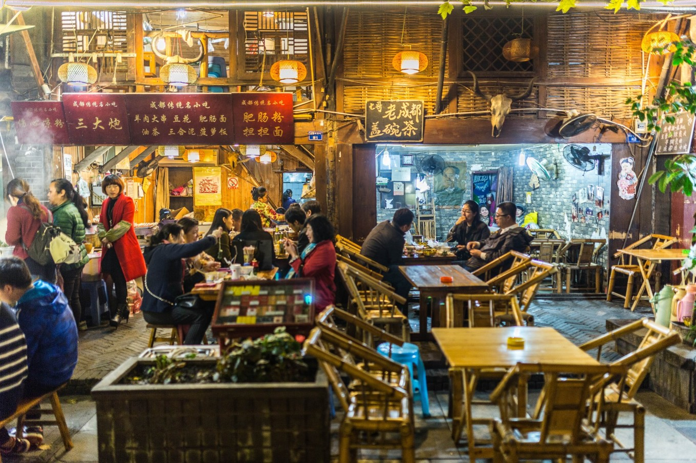
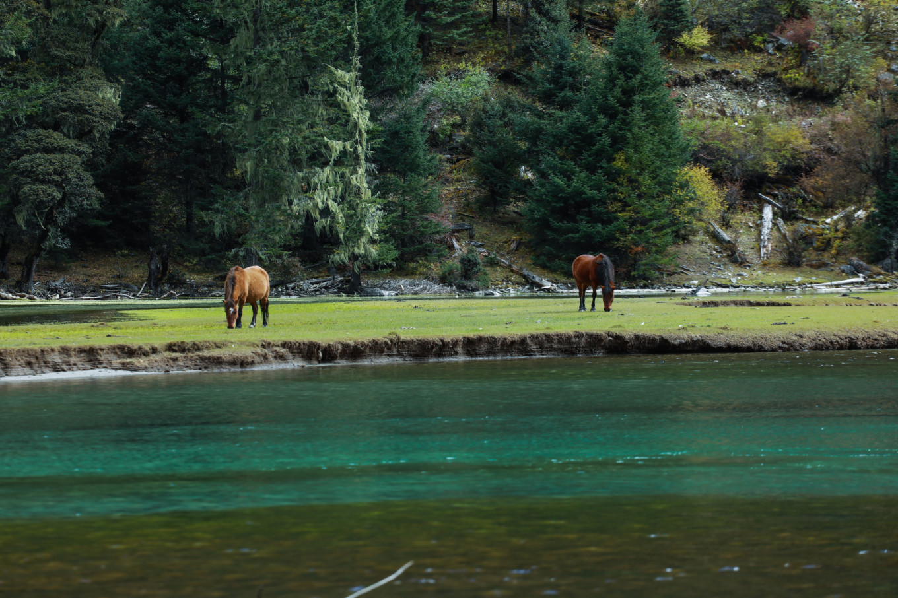
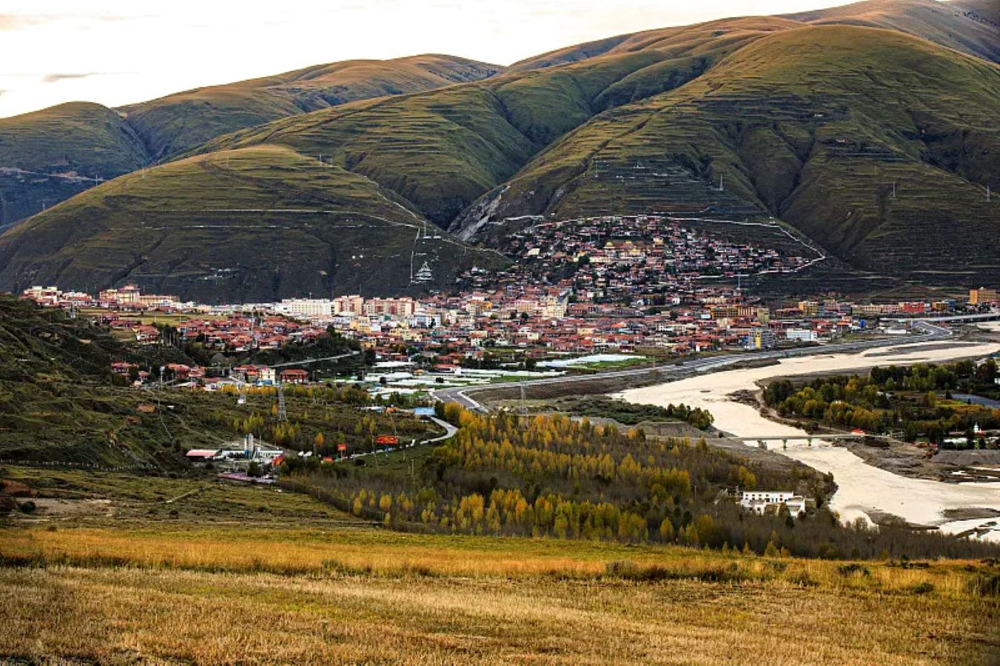

成都融创乐园超详细指南：亲子体验、表演、6大主题园区
成都融创乐园，占地面积约51.5万㎡，以蜀文化为主题，融合多元文化，设计了天府耍都、蜀汉风云、 藏羌秘境、星际传奇、奇遇花园、萌宠小镇六大主题区，可以身临其境感受蜀地文化的魅力。31种大型游乐项目，一天多场的顶级演出表演。
- 成都
- 2023-7-10
- 48529浏览

成都一日游超强攻略：如何耍得像个当地人一样巴适！
成都作为时下很火爆的旅游目的地之一，川剧美食大熊猫，耍事太多似乎也成了游客的一种“烦恼”。 走在成都街头，时常窜进耳朵里的是一句软糯的“好巴适哦”， 蜀地方言中的“巴适”，意即“舒服”。要耍得像个当地人一样巴适，这份攻略应该很对你的胃口。
- 成都
- 2023-7-15
- 15792浏览
成都美食之苍蝇馆子必吃榜，本地人光顾的地道家常美食
在成都，「苍蝇馆子」约等于「绝世美味」，好吃的成都人对味道非常执着，而对于就餐环境则不怎么在意，于是就萌生出了无数接地气的苍蝇馆子。
- 成都
- 2023-7-30
- 34620浏览
都江堰青城山行前必看：大交通、行程路线、省心玩法
作为成都周边经常能见雪山的周末度假地，在都江堰、青城山生活的每一刻，时常是幸福的。它凭借其得天独厚的自然资源与文化传承，将一幅画卷徐徐展开。
- 成都
- 2023-8-16
- 25364浏览

如何规划川西自驾：线路盘点、最佳时间、路况及车型等
近年来川西地区可是自驾目的地的人气之王。当你从海拔500米的成都出发，一路向西，迎接你的将是3000米 以上云雾缭绕的冰川河谷、高山草甸、清澈海子、原始森林、千年寺庙以及让人深陷其中的藏羌风情。
- 成都
- 2023-8-24
- 1630浏览

川西大环线怎么玩？9日超详细行程总览 & 每日建议
线路涵盖川西地域各大知名湖泊、寺庙、雪山、草原、垭口等人文和自然景观，并且先后经过317川藏北线和318川藏南线 两大经典进藏公路。稻城亚丁、毕棚沟、“世界高城”理塘、色达、海螺沟是这条线路的精华景点。
- 成都
- 2023-8-28
- 16792浏览